地政学
ハルツームは青ナイルと白ナイルの合流点に置かれ、官庁、軍事施設、大使館、空港、橋が近い首都です。紅海、サヘル、エジプト、エチオピア方面への回路を結び、衝突時には統治と避難の両方が街路に現れます。川も境界。

🇸🇩 スーダン / アフリカ / World City Atlas
青ナイルと白ナイルが出会う首都です。国家機能、河港、市場、イスラムの暦、暑熱と水、住宅地、避難の経験が重なり、都市インフラの脆さと生活の粘り強さが同じ地図に現れます。
都市の骨格
ハルツームは青ナイル、白ナイル、オムドゥルマンとバーリを結ぶ橋で成り立つ三都の中心です。川は眺望である前に、水、農地、交通、政治、避難路、記憶を束ねる都市の背骨です。
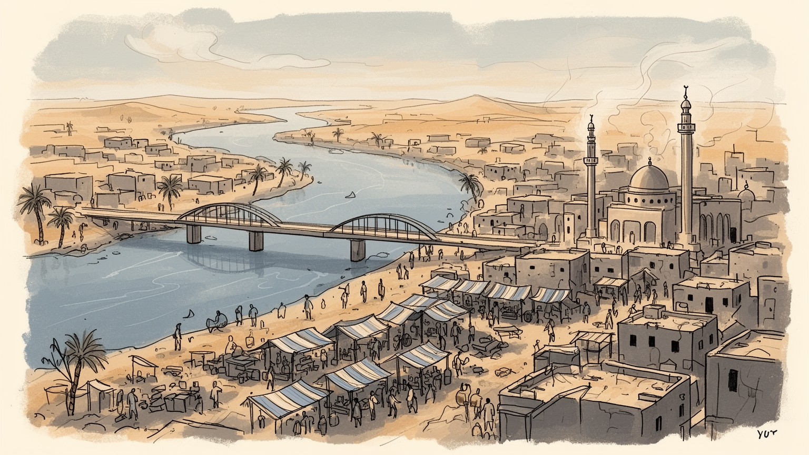
ハルツームは青ナイルと白ナイルの合流点に置かれ、官庁、軍事施設、大使館、空港、橋が近い首都です。紅海、サヘル、エジプト、エチオピア方面への回路を結び、衝突時には統治と避難の両方が街路に現れます。川も境界。
行政、河港商業、市場、建設、食品加工、大学、医療が都市を支えます。戦闘や停電、燃料不足が続く局面では、賃仕事、露店、運送、水売り、修理、親族の送金が生活をつなぐ重要な仕事になります。現場力が鍵です。
イスラムの礼拝、ラマダン、スーフィーの唱念、結婚式、詩、音楽、コーヒーの場が都市の時間を作ります。スーダン文化はアラブ、ヌビア、アフリカ諸地域の移動が重なり、市場や家庭料理に濃く残ります。声も香も残ります。
ナイルの合流、国立博物館、スーク、オムドゥルマンの市場は都市を知る入口です。一方で住民には水、暑熱、家賃、停電、移動、避難先との往復が重く、観光の視線だけでは日常を捉えられません。暮らしが先です。
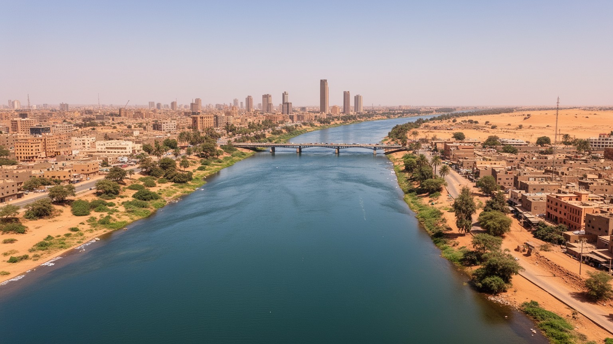
ハルツームを理解する入口は、青ナイルと白ナイルが出会い、北へ向かうナイルとなる地形です。川の合流は観光写真の構図であるだけでなく、首都の水源、橋、農地、河岸の住宅、軍事的な要所、避難の方向を決めてきました。東から流れる青ナイルはエチオピア高原の雨を受け、西から来る白ナイルはより長い流域の水を運びます。二つの水が都市の中央で交わるため、ハルツーム、オムドゥルマン、バーリは別々の市街でありながら一つの生活圏として結ばれます。橋が止まれば通勤、物資、医療、家族訪問は急に難しくなり、川沿いの農地や市場の価値も変わります。乾いた大地の中で水辺は涼しさと生産の場所ですが、同時に洪水、占拠、検問、移動制限の影響も受けやすい場所です。川を読むことは、都市の美しさだけでなく、誰が水へ近づけ、誰が橋を渡れ、誰が川から遠い暑い地区で暮らすのかを見ることでもあります。合流点の周囲では、堤防、取水施設、島、砂州、船着き場が季節ごとに違う意味を持ちます。雨季の増水は農地を潤しながら低地の家を脅かし、乾季の浅い川面は人と家畜の移動を変えます。水辺を歩く視点と、橋を必要とする住民の視点を重ねると、ハルツームの地図はより立体的に見えます。合流点は都市の象徴である前に、生活の選択肢と危険を同時に集める要所です。今も重要です。
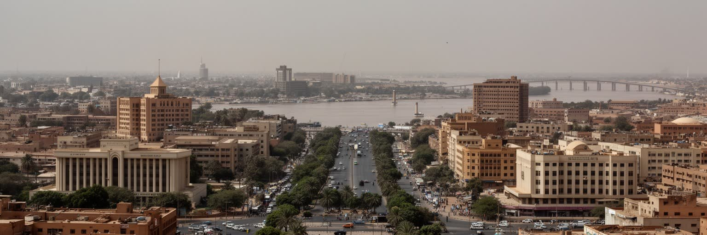
ハルツームはスーダンの行政首都として、官庁、外交団、大学、放送、銀行、交通結節点を集めてきました。国家機能は独立後の制度だけでなく、植民地期の区画、軍の施設、川沿いの広い道路、空港や橋の配置にも刻まれています。首都に政治、軍事、金融、報道が集中するほど、意思決定は速く見えますが、危機が起きたときには都市生活そのものが制度の揺れを受けます。戦闘、停電、通信障害、燃料不足、公共施設の閉鎖は、住民にとって抽象的な政治ではなく、薬を買えるか、水を運べるか、学校へ戻れるかという問題になります。首都の建物は権力を象徴しますが、都市を動かすのは窓口職員、運転手、警備員、清掃、教員、医療従事者、市場の商人でもあります。ハルツームの首都性は、国家の中心であることと、国家の不安定さを最も近くで経験することが切り離せない点にあります。大使館街やホテル、会議施設は国際社会との窓口であり、地方から来る人にとっては許認可、治療、入学、就職を求める場所でもあります。首都への集中は機会を作る一方、地方との格差を広げ、道路や住宅を過密にします。ハルツームを見ることは、国家がどこで住民に触れ、どこで届かなくなるのかを読むことでもあります。行政の中枢が機能するかどうかは、地方の役所、病院、学校の再開にも影響します。首都の回復は国内全体の信頼を左右します。
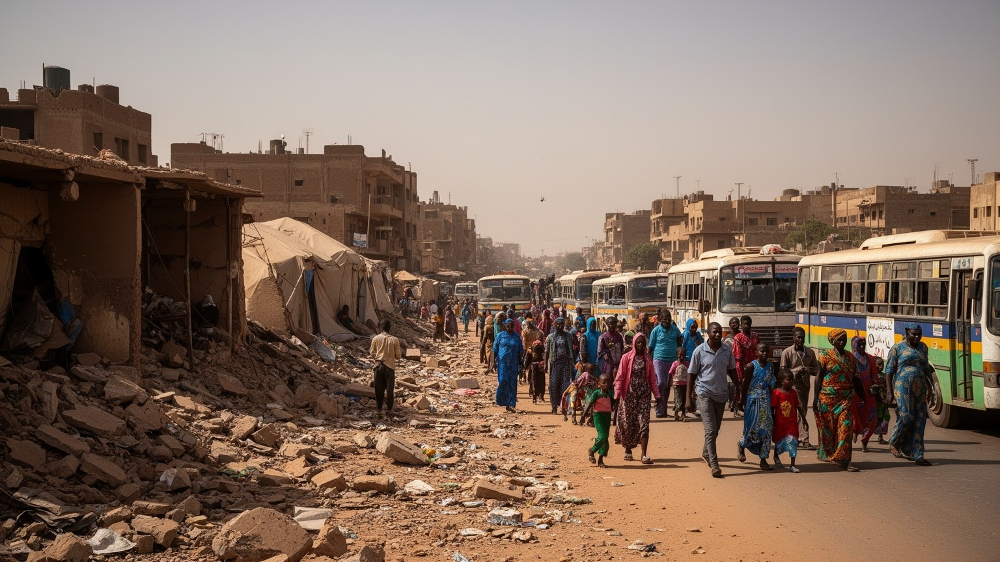
近年の軍事衝突は、ハルツームを単なる政治ニュースの舞台ではなく、生活圏が避難路へ変わる都市として見せました。戦線や支配の状況は地区ごとに変わり得るため一概には言えませんが、住民の経験としては砲撃や銃声、検問、略奪への不安、病院の機能低下、食料と水の不足、通信の途切れが重なります。家を離れた人は国内の別地域や国外へ移り、残った人も親族の家、学校、宗教施設、半壊した住宅をつないで暮らすことがあります。避難は一度きりの移動ではなく、荷物を減らし、現金や身分証を守り、子どもや高齢者の体調を見ながら判断を繰り返す過程です。都市インフラへの被害は、道路や建物の損傷だけでなく、水道、電力、市場の信用、学校の暦、隣人関係を変えます。ハルツームを読むには、勝敗を断定するよりも、紛争が日常の細い接続をどのように切り、住民がそれをどう補っているかを見る必要があります。避難先では家賃、食費、学校の受け入れ、医療費が新しい負担となり、戻る判断も安全、交通、住宅の状態に左右されます。残る人と離れる人の間で情報と送金が行き来し、都市は地理的に散らばった家族の記憶としても続きます。被害を数だけで見ると、この長い調整の時間が見えにくくなります。安全を確認する声、充電できる場所、薬を分ける近所の関係が、公式支援の届かない時間を埋めます。
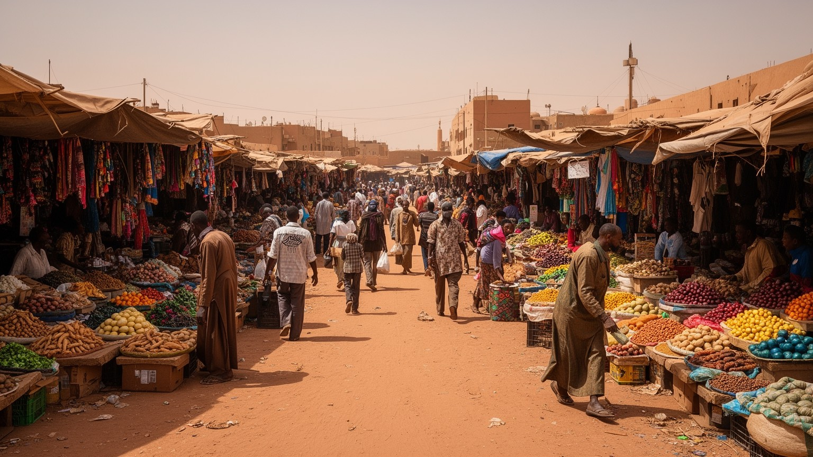
ハルツームの経済は、官庁や銀行だけでなく、スーク、露店、河港、倉庫、バス停、修理店、家内労働の細かな網で動きます。オムドゥルマンの市場は衣料、香辛料、金属加工、家畜、日用品、宗教用品が重なる大きな商業空間で、農村から来る商品と都市の消費を結びます。公式な統計に表れにくい仕事も多く、運搬、荷役、日雇い建設、携帯修理、発電機の整備、水の販売、家庭料理の販売が生活を支えます。紛争や物価上昇が起きると、店は在庫を減らし、通貨への信頼が揺れ、取引は親族や顔見知りの信用に寄りかかります。女性の労働も家庭内に隠れがちですが、食の準備、露店、裁縫、教育、看護、避難先での世話を通じて都市の再生産を担います。ハルツームの産業を見るときは、大きな企業名よりも、道路脇で修理し、荷を運び、水を売り、少量の商品を回す人々の反復が都市を生かしていることを捉える必要があります。河港と道路は、穀物、燃料、建材、家畜、輸入品を動かす回路であり、価格の変動はそのまま食卓に届きます。若者にとっては大学教育が希望である一方、雇用の不足や出国の選択も現実です。市場の賑わいは活力であると同時に、正規の仕事だけでは暮らしが足りない都市の姿でもあります。都市経済の回復は、銀行だけでなく小売り、運送、修理、教育が同時に戻ることで実感されます。
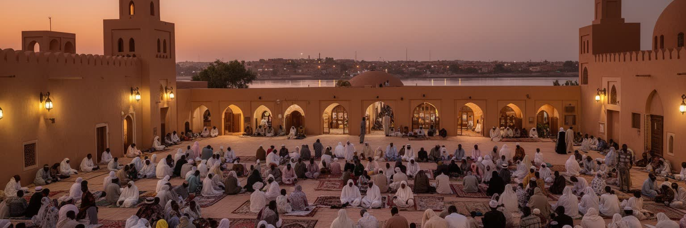
ハルツームの文化は、イスラムの礼拝時間、ラマダンの断食明け、金曜の移動、スーフィーの唱念、結婚式の音楽、詩の朗読、路地のコーヒーの場に宿ります。宗教は制度や戒律としてだけでなく、隣人に食を分けること、葬儀を支えること、避難した家族を受け入れることにも現れます。スーダン文化はアラブ系、ヌビア系、ダルフール、コルドファン、東部、南方との移動が重なり、衣服、香、太鼓、歌、言語、料理に多層の記憶を残します。都市のイスラムは一枚岩ではなく、学者、スーフィー教団、若者文化、女性のネットワーク、商人の信頼関係として異なる姿を持ちます。政治的な緊張が宗教言説と結びつくこともありますが、日常の信仰はもっと生活に近く、暑い午後に日陰を分け、客に甘い茶を出し、親族の安全を祈る行為として続きます。ハルツームを文化都市として読むには、博物館だけでなく、祈りと音楽と市場が同じ生活時間を作ることを見る必要があります。結婚式の装い、ヘナ、香を焚く習慣、家庭で出されるアシーダや豆料理は、都市の記憶を家族単位で伝えます。若者は携帯電話や海外の音楽を通じて新しい表現を取り入れ、古い詩やリズムを別の形で使い直します。文化は保存された展示品ではなく、移動と危機の中でも続く日々の作法です。人が散らばっても、歌、祈り、料理の作法は離れた家族を結び直します。
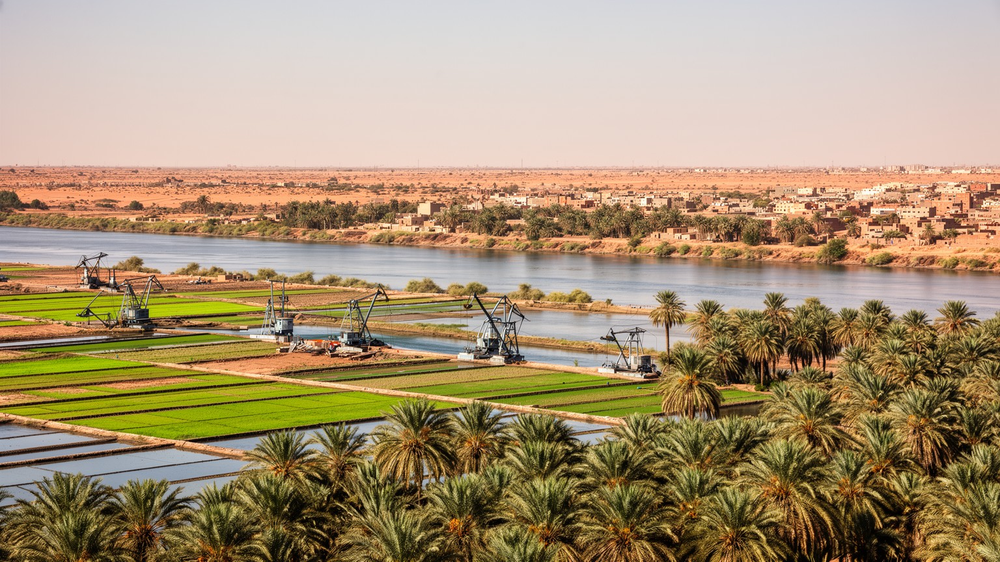
ハルツームの周辺では、ナイルの水が都市近郊の農地、家畜、野菜市場、日々の食を支えています。乾燥した気候の中で川沿いの畑は貴重で、オクラ、玉ねぎ、豆、葉物、飼料作物が都市の台所へ運ばれます。水は豊かに見えても、取水、ポンプ、燃料、配管、貯水、料金の仕組みによって利用しやすさが大きく変わります。停電や燃料不足が起きれば、農地への灌漑も家庭の水くみも一気に難しくなります。都市が拡大すると、農地は住宅地や倉庫に変わり、川に近い土地ほど価格と安全保障上の意味を持ちます。洪水期には恵みの水が危険にもなり、低い地区の住宅や道路を脅かします。ハルツームの食を考えることは、遠い農村だけでなく、首都の縁で水を管理し、作物を運び、市場で小売りする人の仕事を見ることです。川は観光の線ではなく、都市の生命維持装置であり、その管理が不安定になるほど生活の格差は水の量と距離として現れます。水の政治は国境を越える問題でもあり、上流の開発や降雨の変化は下流の都市に影響します。家庭では貯水容器、井戸、給水車、近所の助け合いが重要になり、農家は燃料と部品の値段に左右されます。水がある都市で水を得にくい人がいることが、ハルツームの社会課題を鋭く示します。食料価格を抑えるには、農地を守ることと安全な輸送路を保つことが欠かせません。
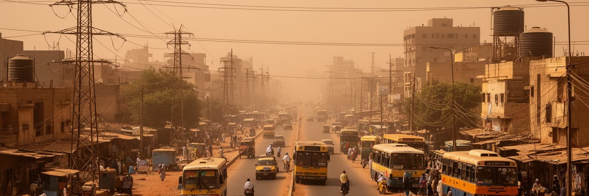
ハルツームの暑熱は、気候の説明にとどまらず、住まい、労働、移動、健康を左右する都市条件です。日中の強い日差しは屋外労働、露店、通学、病院への移動を厳しくし、停電が起きると冷房、冷蔵、ポンプ、通信、医療機器への影響が広がります。水を確保できる家と、遠くから運ぶ家では、同じ猛暑でも身体への負担が違います。日陰、風通し、中庭、厚い壁、早朝と夕方に動く生活リズムは、暑さへの知恵として都市に残りますが、密集住宅や避難先では十分に機能しないことがあります。砂ぼこり、排水不良、ごみ収集の停滞は、暑さと結びついて感染症や衛生の問題を強めます。暑い都市を支えるには、発電所や水道管だけでなく、修理人、給水車、近所の井戸、薬局、日陰の市場、休める公共空間が必要です。ハルツームのインフラを読むとは、設備の有無だけでなく、故障したときに誰が直し、誰が待たされ、誰が暑さの中で水を運ぶのかを見ることです。気温が上がるほど、家の材質、屋根の断熱、街路樹、バス停の日陰、診療所までの距離が命に関わります。雨季の短い豪雨は道路を泥に変え、排水の弱い地区では移動と衛生を同時に悪化させます。暑熱対策は冷房だけではなく、安定した電力、手頃な水、休息できる職場、近所で体調を見守る関係まで含みます。気候への適応は、都市計画と家庭の工夫が重なって初めて現実になります。
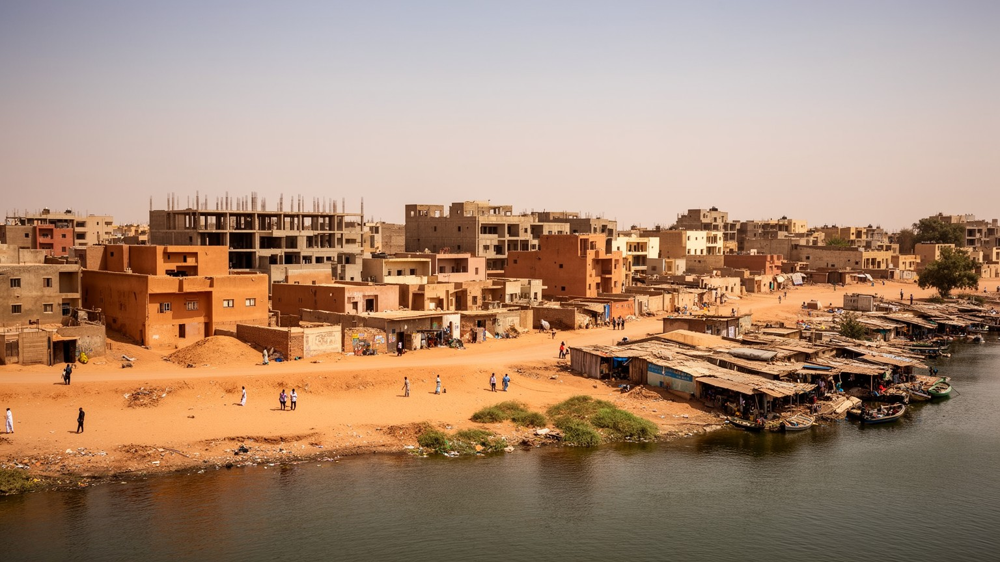
ハルツームの住宅は、計画された地区、古い中庭住宅、未整備の周縁部、集合住宅、避難者が身を寄せる家が重なります。首都への人口集中は、仕事や学校への近さを求める移動だけでなく、地方の紛争、干ばつ、家族のネットワークによっても進んできました。家は私的な空間であると同時に、親族を泊め、食を分け、情報を集め、暑さから逃れる避難所です。増築や仮設の部屋は、家族の成長や収入の変化に合わせた生活の調整ですが、上下水道、道路、排水、学校、診療所が追いつかなければ負担も増えます。紛争下では空き家、損傷した家、占拠された家、戻れない家が生まれ、所有や賃貸の関係も不安定になります。住宅問題は建物の数だけでなく、安全に眠れるか、女性や子どもが水場へ行けるか、高齢者が薬を得られるかという日常の問題です。ハルツームの近隣を読むには、壁の内側の家族関係と、路地、井戸、店、モスク、学校が作る互助の範囲を一緒に見る必要があります。中庭は暑さを逃がし、客を迎え、女性の作業や子どもの遊びを支える場所ですが、過密になると休息の余白は消えます。家賃の上昇や収入の途絶は、同居人数を増やし、衛生とプライバシーを難しくします。住宅地の強さは、建物の頑丈さだけでなく、非常時に水、食料、情報を分け合える近所の厚みにも表れます。住まいは復興の最小単位です。
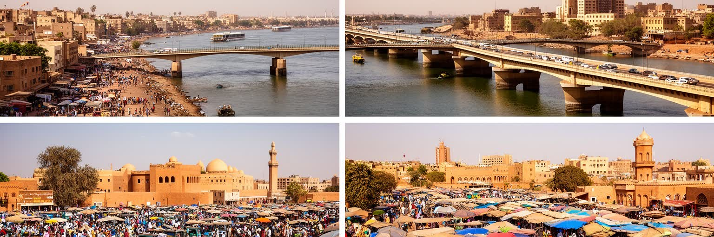
ハルツーム観光の入口は、ナイルの合流、スーダン国立博物館、オムドゥルマンの市場、マフディー期の記憶、川辺の夕景です。博物館にはヌビア、古代王国、キリスト教期、イスラム期へ続く長い歴史が集められ、スーダンが単なる砂漠の国ではなく、ナイル流域とサヘル、紅海、アフリカ内陸を結ぶ文明の交差点であることを示します。スークでは香、布、金属器、日用品、食材、宗教用品が並び、観光と生活の境界ははっきりしません。ただし、紛争や治安の不安、施設の損傷、移動制限は、観光の可能性を大きく左右します。訪問を語るときは、名所の魅力だけでなく、文化財の保護、館員や商人の生活、住民の安全を同時に考える必要があります。ハルツームの遺産は、古代の展示物だけでなく、詩、音楽、コーヒー、結婚式、市場の交渉、川辺の記憶としても続きます。観光の価値は、外から見る珍しさではなく、住民が自分たちの歴史を守り直せる条件と結びついて初めて意味を持ちます。観光が再び動く局面では、ガイド、運転手、宿、飲食店、工芸の売り手に収入をもたらしますが、復旧が住民の生活より先に進むなら違和感も生まれます。文化財の保存は専門家だけの仕事ではなく、地区の記憶、学校教育、市場で語られる物語とも結びつきます。旅の視線は、傷ついた都市を消費せず、生活の回復を尊重するものであるべきです。
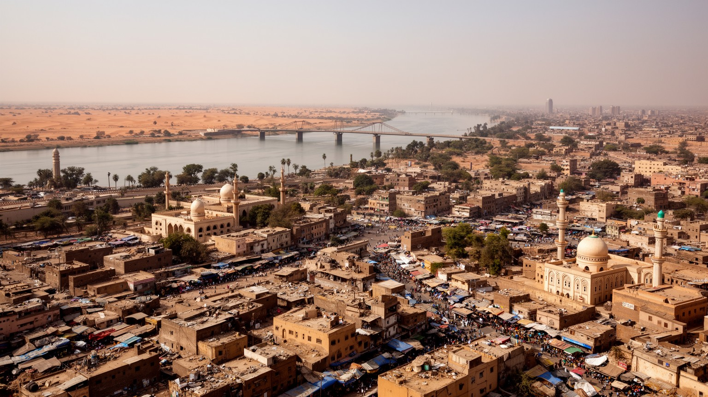
ハルツームは、二つのナイルが合流する地形、国家首都の制度、市場の生活力、イスラム文化、暑熱と水の制約、紛争と避難の経験が同じ都市空間で重なる場所です。川は都市を美しく見せる一方、橋と水道に依存する生活の弱点も示します。首都機能は行政と外交を集めますが、危機の際には官庁、空港、病院、学校、住宅地が同時に揺れます。市場は不安定な状況でも食と収入をつなぎ、宗教や親族のネットワークは避難や支援の基盤になります。ハルツームを読むとき、紛争だけで都市を説明すると、長い歴史、文化、農業、水の技術、日常の工夫が見えなくなります。逆に、川辺の景観や古代遺産だけを見ると、現在の生活の脆さを見落とします。重要なのは、住民がどの橋を渡り、どの市場で買い、どの家に身を寄せ、どの水を使い、どの祈りや音楽で時間を保っているかを重ねて見ることです。ハルツームは傷ついた首都であると同時に、水と人の移動によって何度も生活を組み直してきた都市でもあります。復旧を考えるなら、建物の再建だけでなく、水道、学校、市場、病院、住宅の権利、文化財、近隣の信頼を同じ地図に置く必要があります。都市の未来は、首都機能を戻す速度だけでなく、避難した人が安全に選択できる余地を持てるかで測られます。ハルツームを総合的に読むことは、川の都市、首都、生活の避難先という三つの顔を同時に見ることです。